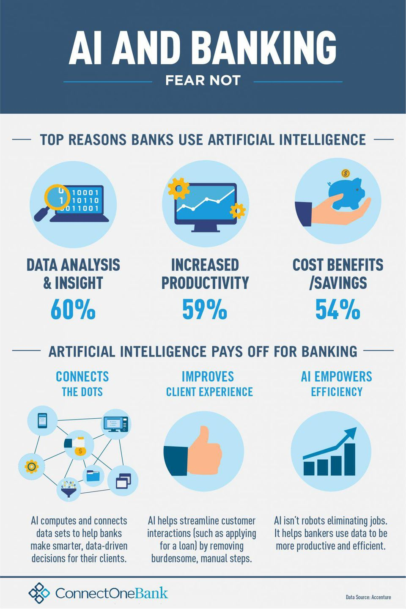
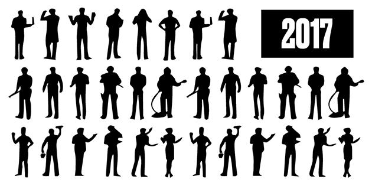

ARTIFICIAL INTELLIGENCE

What exactly is artificial intelligence?
1.Social Media
SOCIAL MEDIA & ARTIFICIAL INTELLIGENCE
2.Digital Assistants
3. Sending email or messages

5. Product Recommendations

As customers browse, interest recommendation algorithms record every page they visit, registering interest tags associated with that content to an individual user profile. The algorithms match items with a customer’s interest tags, which are updated in real time as they continue to engage with the brand.
6. Home Automation
6. Home Automation
6. Home Automation
- AI's impacts on automation and job security will affect many people's job prospects.
- Jobs involving repetitive tasks are the most at risk.
- As AI is replacing the majority of the repetitive tasks and other works with robots, human interference is becoming less which will cause a major problem in the employment standards.
- Every organization is looking to replace the minimum qualified individuals with AI robots which can do similar work with more efficiency.
